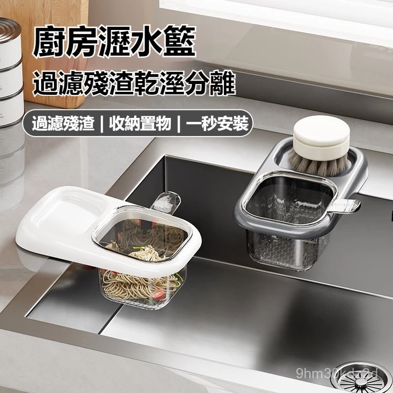
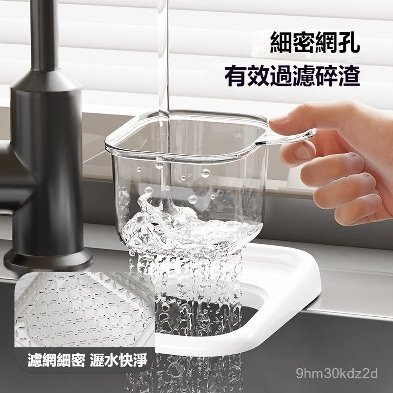

每天重複的噩夢：
晚餐後，你站在水槽前。
碗盤洗好了，但水流越來越慢。
你低頭一看——
菜渣、油膩、不明碎屑，
全卡在排水孔上面。
你閉著眼，伸手去摳。
😤 菜渣堵住排水孔
平均每天花 3 分鐘 在通水管。一年就是 18 小時，浪費在噁心的事上。
🤮 濕垃圾悶在袋子裡
夏天不到 6 小時 就發臭。打開垃圾桶那一刻，你知道的。
🙄 海綿菜瓜布亂丟水槽
48 小時 內細菌量爆增 1000 倍。你每天用它洗你吃飯的碗。
夠了。
你不需要繼續忍受。
掛上去，搞定。
不用黏、不用鑽、不用工具。
扣在水槽邊，一秒裝好。

過濾碎渣
乾溼分離
收納小物

細密網孔設計
碎到不行的菜渣也跑不掉。
食品級 PP + PET 材質，安心接觸你的食物。

整盤直接倒
湯湯水水自動濾掉，殘渣留在籃子裡。
一提一倒，殘渣進垃圾桶。不碰、不摳、不噁心。

不用的時候
放菜瓜布、放洗碗精、放刷子。
廚房檯面終於不再亂七八糟。
30秒，全部看懂
用過的人怎麼說
3,200+
等候名單
98%
回購意願
30秒
安裝完成
「租屋處的水槽超小，以前每次洗碗都塞住，房東還怪我不會通水管。現在掛上去就好，搬家還能帶走，租屋族真的必備！」
「買了三個，自己家一個、婆婆家一個、媽媽家一個。婆婆說她用了 30 年的濾網終於可以丟了。全家人都在用。」
「透明材質看得到裡面，知道什麼時候該清。卡扣很緊不會掉，材質摸起來也不像廉價貨。199 塊能買到這個品質，划算。」
以上為產品使用情境模擬，上線後將替換為真實評價
🛡️ 食品級認證
PP+PET 安心無毒
🔄 7天退貨
不好用？退給我們
🚚 滿額免運
訂單滿 $399 免運

規格
- 尺寸
- 22 × 13 × 8.5 cm
- 材質
- 食品級 PP + 透明 PET
- 重量
- 約 120g
- 安裝
- 卡扣式，免工具
- 適用
- 水槽邊緣 0.5 ~ 3cm
💡 適用市面上 95% 的水槽